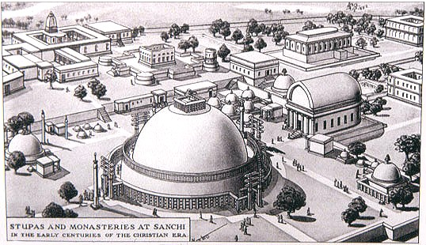
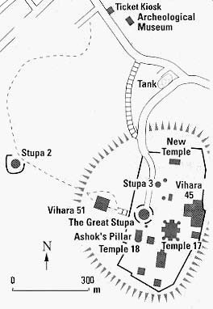
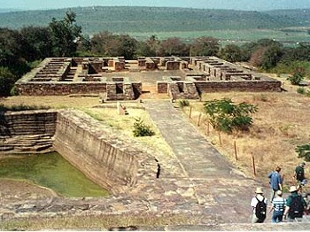

|
BuddhaSasana Home Page |
Vietnamese, with Unicode Times font |
Bảo tháp Sanchi
Sanchi Hill, Vidisha, Madhya Pradesh, India
|
 |
|
|
|
|
|  | |
|
Dấu mốc Sima |
|
| Bảo tháp số 3 (Stupa 3), nơi tìm thấy xá lợi Ngài Xá-lợi-phất & Ngài Mục-kiền-liên | |
|  | |
Source: Internet
[Trở
về trang Thư Mục]
last updated: 03-07-2005